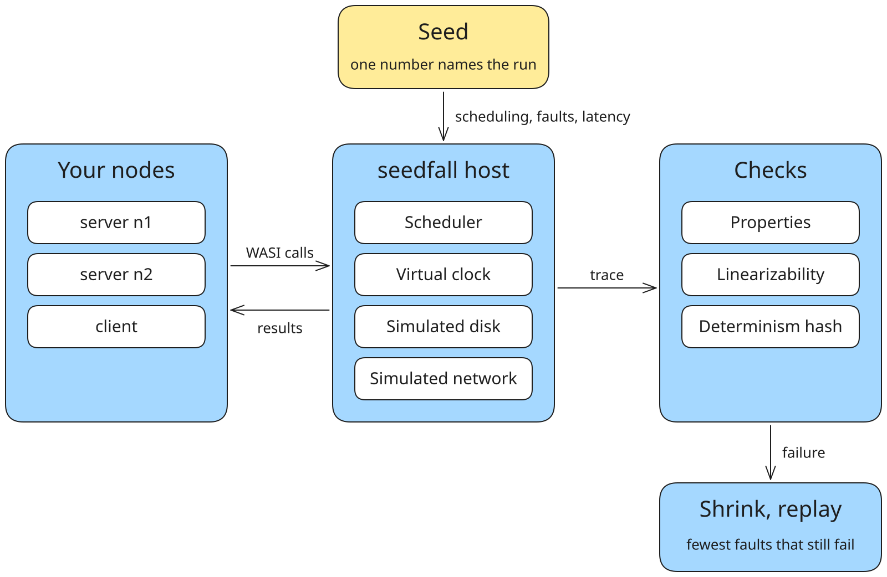
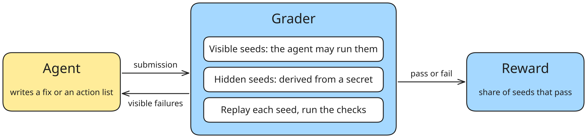
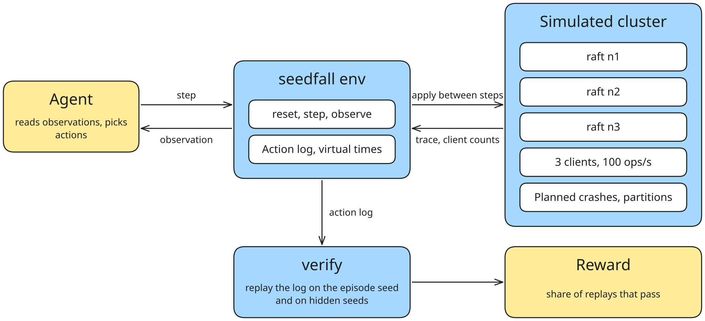

seedfall: crash testing for Go services
Deterministic simulation testing on the stock Go toolchain
A database or queue that writes to disk usually passes its tests, then loses data in production that it had already told a client was saved. The cause is rarely a logic error. It is a crash at one moment, such as halfway through a write, or after a rename and before the directory was synced. Normal tests almost never hit that moment, and nobody can reproduce it when production does.
seedfall runs a Go service in a simulated world, crashes it at those moments, breaks its disk and network, and names every run with one number. The same number replays the same run, byte for byte, on any machine. It found data-loss bugs in NATS JetStream, buntdb, hashicorp/raft and seven other storage projects.
How it works

seedfall compiles each node of your service with Go's GOOS=wasip1 target and runs it on wazero. On that target everything nondeterministic reaches the outside world through three calls: random bytes, the clock and sleeping. seedfall implements all three, and it simulates the disk and the network, so your code keeps using plain os.File and net.
- Virtual clock. Time moves only when the scheduler says so, so a 10 minute timeout costs nothing.
- Disk model. A write is visible at once but survives a crash only after
fsync, and a crash can keep a torn prefix of the pending writes. - Network model. Messages can be delayed, reordered and reset, and nodes can be partitioned.
- Shrinking. When a run breaks a check,
seedfall shrinkreplays it with fewer faults and keeps a change only while it still fails the same way.
examples/kvlog is a small key-value server that syncs before it answers "saved":
$ seedfall run -c seedfall.always.json -seeds 1-100
FAIL seed 1 at t=2.891820635s (737 scheduler steps, 445ms real)
client#1: acknowledged write lost: k96=v96, server now answers "NONE"
$ seedfall shrink -c seedfall.always.json -seed 1
faults before the failure (2):
427.268ms crash server during disk op #56, restart at 761.268ms
802ms crash server, restart at 802msSeed 1 had 33 faults. Shrinking cut it to 2 in 16 runs. The first crash leaves a half-written line, the server appends after it, and the second restart cannot read the record that follows.
What it found
I ran it on open-source Go storage projects. Status as of 2026-11-09.
- NATS JetStream. A crash during stream creation loses the stream and its acknowledged messages. nats-server#8872, open.
- rosedblabs/wal. After one torn write, later synced writes are lost and rosedb v2 cannot open. #51, open.
- tidwall/buntdb. A crash after the automatic shrink can bring the database back empty. #126, fixed in 6a23821.
- tidwall/wal. A crash mid-write makes the log unopenable, and the pending fix is incomplete. #43, open.
- hashicorp/raft. The snapshot directory is never synced before a rename, so on a strict file system a node can panic on every restart. #744, open.
- nutsdb. Recovery can drop every acknowledged entry in a bucket, and a damaged tail makes
Openfail forever. #695, #696, #697, open. - diskv. On a strict file system an acknowledged write can revert. #83, open.
- bitcask. Four ways to leave the database unopenable after one crash. Write-up, not filed.
- bbolt. On a strict file system one crash can lose the whole database. Write-up, not filed.
- jmsadair/raft. Four ways one crash or clock step back leaves a node that cannot restart. Write-up, not filed because the repository is no longer public.
A strict file system is one where a created or renamed file survives a crash only after its directory is synced. hashicorp/raft (600 seeds) and etcd-io/raft (100 seeds) pass cleanly. I also asked Claude for a crash-safe key-value store nine times with one prompt. Every sample's own tests passed, and seedfall found two that can refuse to open forever after a specific crash.
Seeds as a grader
What makes a seed useful to a person also makes it a good reward for an agent. I believe the hard part of grading agents on systems work is not running their code but trusting the score, and seeds give three properties that are hard to get otherwise:
- Unseen faults. An agent cannot tune its work to a seed it never sees, so a score over secret seeds measures behavior that holds up under faults it did not predict.
- Exact replay. Anyone can recompute a score from the submission and the seeds.
- Readable failures. A failure shrinks to the few events that caused it, which is feedback an agent can act on.

Operator mode
In operator mode an agent acts on a live simulated cluster, one step at a time: crash, restart, pause, partition or reconfigure a node, between two scheduler steps. Every action is logged with its virtual time. The reward comes from replaying that log from scratch on the episode's seed and on other seeds the caller names.

seedfall env, which applies each action between two scheduler steps and logs it. The score comes from verify, which replays that log on other seeds.The interface is one JSON object per line, with reset, step, observe, finish and verify:
{"cmd":"reset","config":"opcluster.json","seed":1}
{"cmd":"step","advance":"1s"}
{"cmd":"step","op":{"kind":"set_args","node":"n1","args":["-id","1","-version","2"]}}
{"cmd":"step","op":{"kind":"restart","node":"n1","args":["300ms"]}}
{"cmd":"verify","seeds":[2,3,4,5]}The scenario is a 3-node etcd-io/raft key-value store with three clients, under planned crashes and partitions. The operator must roll every node to version 2 by 12s. The run fails if client availability drops under 40% in any 2s window, if a node is not on version 2 at the deadline, or if the history is not linearizable. I wrote four action lists and ran each on seeds 1 to 21:
- 1good21
- 2idle0
- 3restart-two0
- 4restart-all0
The grader tells a careful rolling restart from doing nothing and from restarting too much at once, the same way on every seed. On a laptop with an Intel Core i5-9300H, reset takes 188ms, a step with an action 22µs, and a full episode 7.7s, which goes to the raft nodes and clients, not the environment. The protocol and every action are in the operator mode docs.
Limits
- Your code must build for
GOOS=wasip1, so no cgo. It only breaks what you check, and it is not a race detector. - Only some file systems are modelled, and it is Go only. Large programs boot slowly.
- In operator mode an action list replays at fixed virtual times, so it cannot react to what another seed does. One episode runs at a time per process.
- The scenario is one cluster and one task. It shows the grading works and is not a benchmark of agents.
GitHub (Apache-2.0) · Getting started · How it works · Findings · All docs